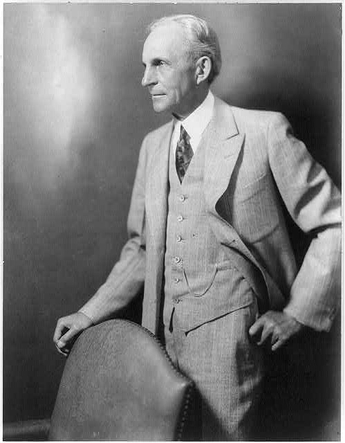

Ге́нри Форд — американский промышленник, владелец заводов по производству автомобилей по всему миру, изобретатель, автор 161 патента США. Его лозунг — «автомобиль для всех»; завод Форда выпускал наиболее дешёвые автомобили в начале эпохи автомобилестроения. Компания «Ford Motor Company» существует по сей день.
Родился в семье эмигрантов из Ирландии, проживавшей на ферме в окрестностях Детройта. Когда ему исполнилось 16 лет, он, сбежав из дома, уехал работать в Детройт. С 1891 по 1899 годы исполнял обязанности инженера-механика, позже главного инженера в «Электрической компании Эдисона» (Edison Illuminating Company). В 1893 году в свободное от работы время сконструировал свой первый автомобиль. С 1899 по 1902 год был совладельцем «Детройтской автомобильной компании», но из-за разногласий с остальными владельцами фирмы ушёл из неё и в 1903 году основал свою компанию — Форд мотор компани, которая первоначально выпускала автомобили под маркой Ford A